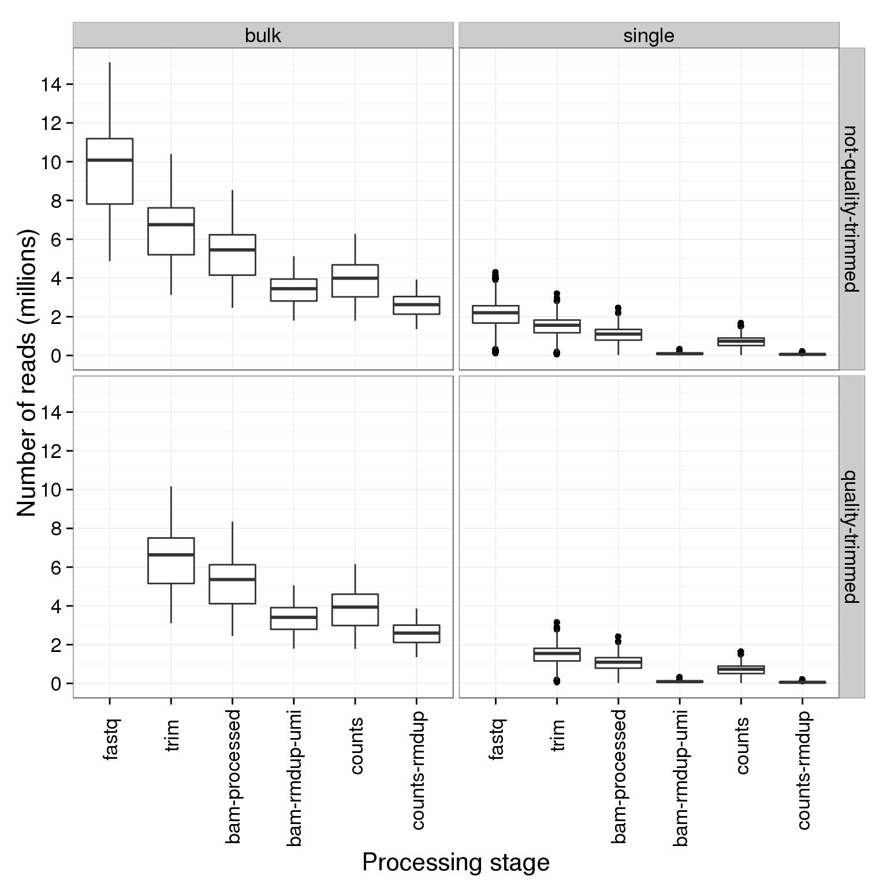
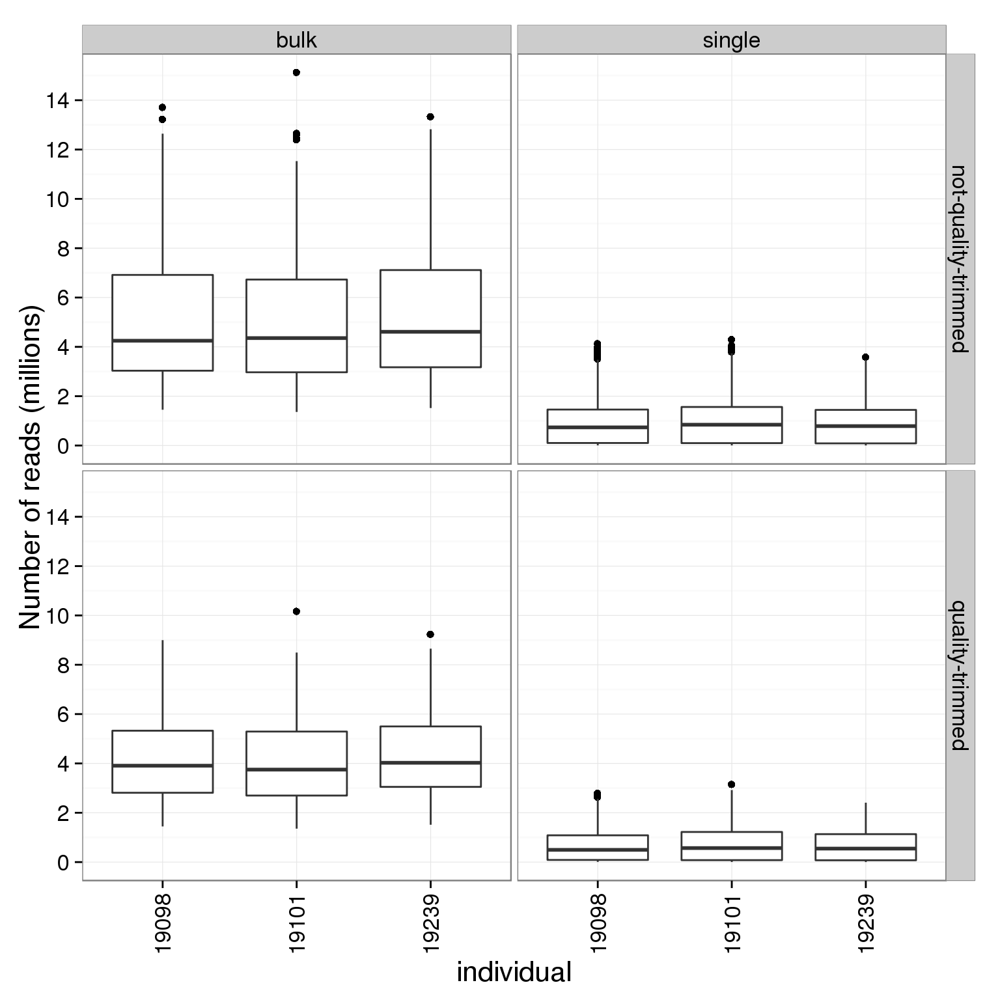
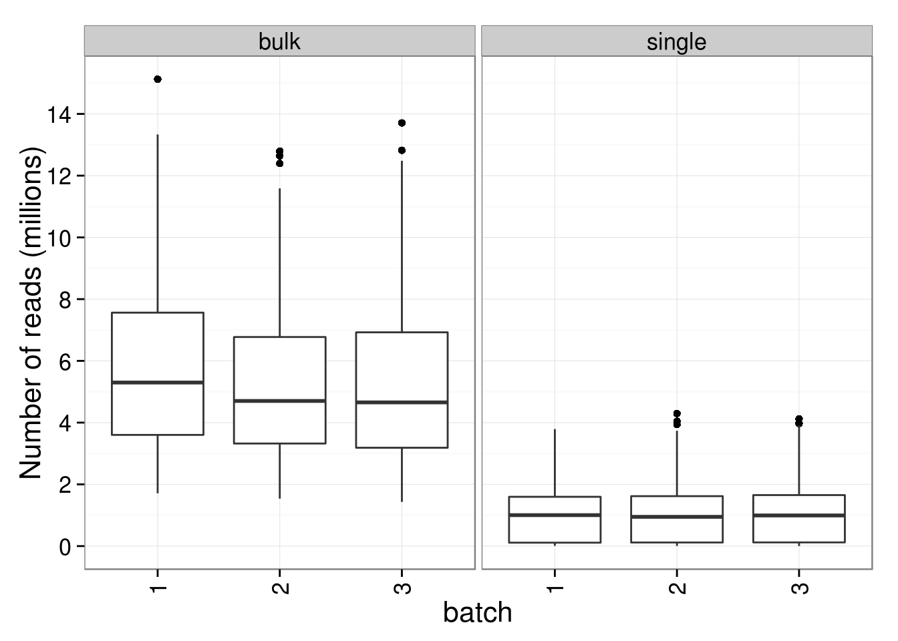
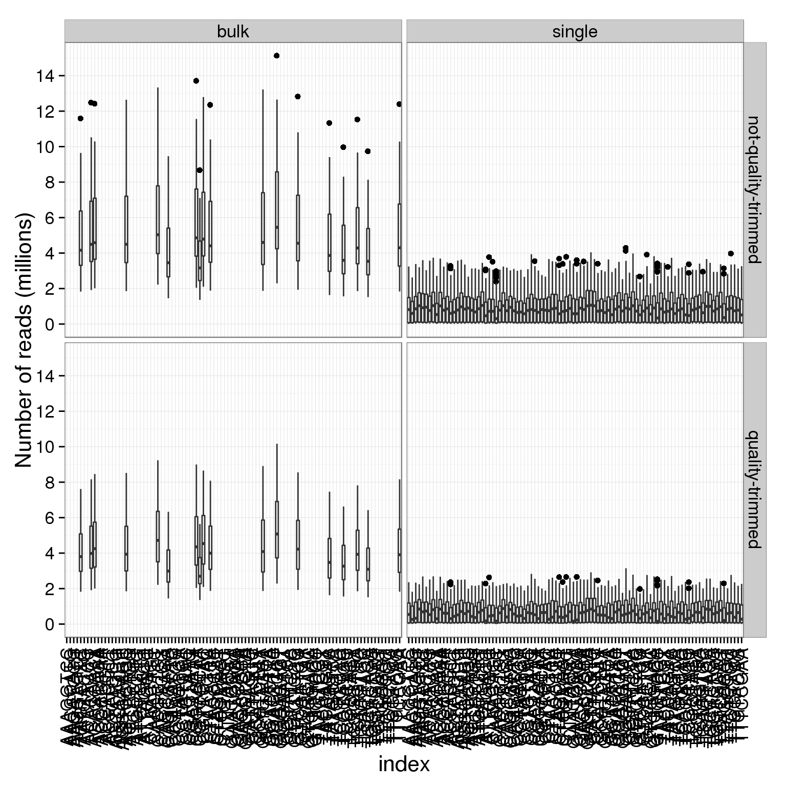
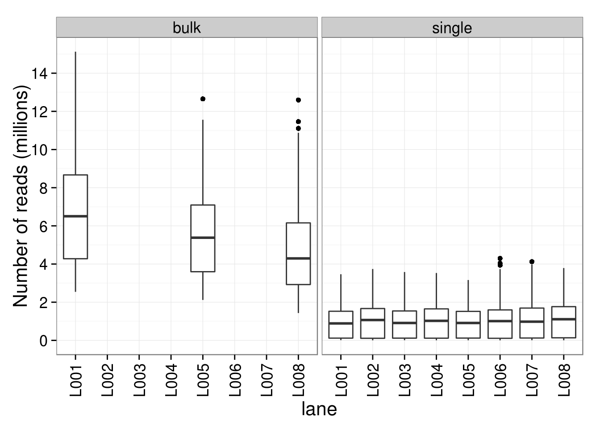
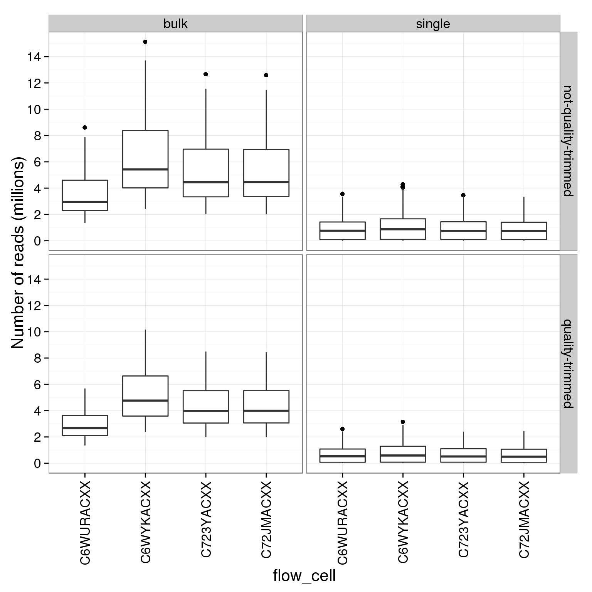

Last updated: 2015-05-29
Code version: bd50ee78f288e4be408987c8211ab0183400a853
During the processing pipeline, the number of reads in a file are counted and saved in a separate text files. The script gather-total-counts.py compiles all these counts and extracts the relevant variables from the filename.
library("ggplot2")
theme_set(theme_bw(base_size = 16))counts <- read.table("../data/total-counts.txt", header = TRUE,
stringsAsFactors = FALSE)head(counts) stage sickle individual batch well index lane flow_cell
1 fastq not-quality-trimmed 19098 1 H03 GGGAATAT L002 C6WYKACXX
2 fastq not-quality-trimmed 19098 2 B05 CTTGAAGG L005 C72JMACXX
3 fastq not-quality-trimmed 19098 2 G10 AGCAAGCG L003 C723YACXX
4 fastq not-quality-trimmed 19098 1 H11 TTCTCTGC L002 C6WYKACXX
5 fastq not-quality-trimmed 19098 2 E07 TGCCCAGA L003 C723YACXX
6 fastq not-quality-trimmed 19098 2 F12 AACCCATG L001 C6WURACXX
counts
1 2114841
2 2394493
3 753351
4 3126886
5 1589238
6 2504377str(counts)'data.frame': 29304 obs. of 9 variables:
$ stage : chr "fastq" "fastq" "fastq" "fastq" ...
$ sickle : chr "not-quality-trimmed" "not-quality-trimmed" "not-quality-trimmed" "not-quality-trimmed" ...
$ individual: int 19098 19098 19098 19098 19098 19098 19098 19098 19098 19098 ...
$ batch : int 1 2 2 1 2 2 2 2 2 2 ...
$ well : chr "H03" "B05" "G10" "H11" ...
$ index : chr "GGGAATAT" "CTTGAAGG" "AGCAAGCG" "TTCTCTGC" ...
$ lane : chr "L002" "L005" "L003" "L002" ...
$ flow_cell : chr "C6WYKACXX" "C72JMACXX" "C723YACXX" "C6WYKACXX" ...
$ counts : int 2114841 2394493 753351 3126886 1589238 2504377 2118488 2214717 1673986 1864989 ...# Order the processing steps
counts$stage <- factor(counts$stage,
levels = c("fastq", "trim", "bam-processed",
"bam-rmdup-umi", "counts", "counts-rmdup"))
# Make new variable to separate bulk and single cell samples
counts$type <- ifelse(counts$well == "bulk", "bulk", "single")
# Scale to millions of counts
counts$counts_mil <- counts$counts / 10^6
# Convert numeric categorical variables to factors
counts$individual <- factor(counts$individual)
counts$batch <- factor(counts$batch)Plot the number of reads at each processing stage faceted by bulk versus single cell sequencing.
ggplot(counts, aes(x = stage, y = counts_mil)) +
geom_boxplot() +
# facet_wrap(type ~ sickle, nrow = 1) +
facet_grid(sickle ~ type) +
scale_y_continuous(breaks = seq(0, 16, 2)) +
labs(x = "Processing stage", y = "Number of reads (millions)") +
theme(axis.text.x = element_text(angle = 90, hjust = 0.9, vjust = 0.5))
counts_sum <- tapply(counts$counts, list(counts$stage, counts$type, counts$sickle), mean)
counts_sum, , not-quality-trimmed
bulk single
fastq 9705088 2092200.84
trim 6536956 1478098.76
bam-processed 5265894 1051763.77
bam-rmdup-umi 3370583 92219.13
counts 3840849 699017.58
counts-rmdup 2571847 56229.42
, , quality-trimmed
bulk single
fastq NA NA
trim 6436990 1460819.87
bam-processed 5186264 1040234.15
bam-rmdup-umi 3338797 92514.04
counts 3786297 692108.05
counts-rmdup 2546592 56208.94The bulk samples have an average of 2.546591810^{6} molecules that map to protein-coding exons (2.571846910^{6} before quality trimming). The single cell samples have an average of 5.620894110^{4} molecules that map to protein-coding exons (5.622941610^{4} before quality trimming). Since each sample is sequenced three times, the average total number of molecules will be 7.639775410^{6} and 1.686268210^{5} molecules for the bulk and single cell samples, respectively.
variables <- c("individual", "batch", "index", "lane", "flow_cell")
for (v in variables) {
p <- ggplot(counts, aes_string(x = v, y = "counts_mil")) +
geom_boxplot() +
facet_grid(sickle ~ type) +
scale_y_continuous(breaks = seq(0, 16, 2)) +
labs(x = v, y = "Number of reads (millions)") +
theme(axis.text.x = element_text(angle = 90, hjust = 0.9, vjust = 0.5))
print(p)
}
sessionInfo()R version 3.1.1 (2014-07-10)
Platform: x86_64-unknown-linux-gnu (64-bit)
locale:
[1] LC_CTYPE=en_US.UTF-8 LC_NUMERIC=C
[3] LC_TIME=en_US.UTF-8 LC_COLLATE=en_US.UTF-8
[5] LC_MONETARY=en_US.UTF-8 LC_MESSAGES=en_US.UTF-8
[7] LC_PAPER=en_US.UTF-8 LC_NAME=C
[9] LC_ADDRESS=C LC_TELEPHONE=C
[11] LC_MEASUREMENT=en_US.UTF-8 LC_IDENTIFICATION=C
attached base packages:
[1] stats graphics grDevices utils datasets methods base
other attached packages:
[1] ggplot2_1.0.0 knitr_1.10.5
loaded via a namespace (and not attached):
[1] colorspace_1.2-4 digest_0.6.4 evaluate_0.7 formatR_0.10
[5] grid_3.1.1 gtable_0.1.2 htmltools_0.2.6 MASS_7.3-33
[9] munsell_0.4.2 plyr_1.8.1 proto_0.3-10 Rcpp_0.11.6
[13] reshape2_1.4 rmarkdown_0.5.1 scales_0.2.4 stringr_0.6.2
[17] tools_3.1.1 yaml_2.1.13